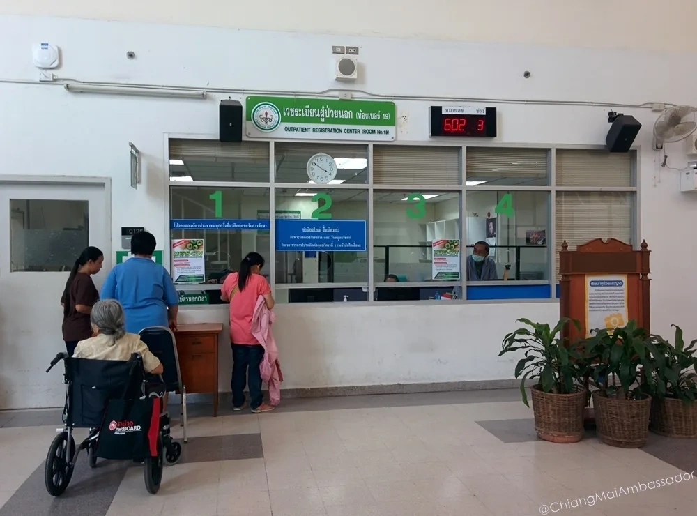

Medical care in Chiang Mai is significantly cheaper than in Western countries at every level of the system, from government hospitals at near-zero cost to international-standard private hospitals at a fraction of what the same treatment would cost in Australia or the UK. Knowing which option to use for which situation saves money and avoids waiting unnecessarily in systems that handle high patient volumes.
This guide covers the practical spectrum of medical services available in Chiang Mai: government hospitals, the CMU Sriphat private wing, neighbourhood clinics, private hospitals, dental care, and pharmacy options for minor ailments.
Government Hospitals
Chiang Mai's government hospitals are part of the national Thai healthcare system and charge minimal fees for outpatient consultations. The two main government hospitals serving the city are:
Maharaj Nakhon Chiang Mai Hospital (Suan Dok Hospital): Located on Suthep Road adjacent to the CMU campus, Suan Dok is the largest and most comprehensive government hospital in the Chiang Mai region. It has specialist departments across all major medical fields, emergency care, and the Sriphat building which operates as a semi-private wing with shorter wait times and English-speaking staff.
Nakornping Hospital: Located on the Superhighway in the Mae Rim direction, Nakornping is a general government hospital serving Chiang Mai's northern districts. Wait times at both government hospitals during peak hours can be long (2 to 4 hours for non-emergency outpatient visits).
For non-urgent conditions where waiting is acceptable and cost is the priority, government hospitals deliver good quality care at very low cost. OPD consultations typically run 30 to 100 THB including basic medications.
CMU Sriphat: The Middle Ground
The Sriphat Medical Center is the private wing within Suan Dok Hospital, operated by Chiang Mai University. It combines the specialist depth of a major teaching hospital with shorter wait times, English-speaking staff, and pricing between government and full private hospitals. A consultation at Sriphat typically runs 200 to 600 THB.
For complex medical issues where specialist knowledge matters but full private hospital pricing is unnecessary, Sriphat is the best-value option in Chiang Mai. The building is clearly marked on the Suan Dok campus.
Private Clinics
Independent private clinics are distributed throughout Chiang Mai's residential areas. A neighbourhood clinic consultation costs 150 to 500 THB including medications for common conditions. These are appropriate for straightforward issues: infections, minor injuries, prescription refills, routine checks. Wait times are typically much shorter than government hospitals.
Quality varies. Clinics in expat-heavy areas like Nimman and Santitham are experienced with foreign patients. For anything beyond a routine consultation, a private hospital or Sriphat is more appropriate.
Private Hospitals
Bangkok Hospital Chiang Mai and Chiang Mai Ram Hospital are the two main international-standard private hospitals in the city. Both have English-speaking staff across most departments, modern facilities, and the ability to handle complex cases including emergencies, surgery, and specialist referrals.
Outpatient consultations at private hospitals run 400 to 1,200 THB depending on the specialist and department. These hospitals accept international health insurance and can process cashless billing with most major international insurers. For emergency situations and complex medical care, private hospitals are the right choice.
Dental Care
Dental treatment in Chiang Mai is genuinely affordable and quality is high at the better clinics. A standard cleaning (scaling and polishing) runs 500 to 1,000 THB. A filling is typically 500 to 1,500 THB. More complex work like crowns and implants can be a quarter of Western prices. Dental tourism to Chiang Mai from Australia and the UK is a real phenomenon. Several clinics on Nimmanhaemin and near the private hospitals specifically cater to foreign patients.
Pharmacy and Minor Ailments
Thai pharmacies (Boots is common in central areas, plus numerous independent pharmacies) are well-stocked. Many medications that require prescriptions in Western countries are available over the counter in Thailand at low cost. Standard antibiotics, antihistamines, antifungal treatments, and pain medications are widely accessible.
For minor ailments, a pharmacy consultation before attending a clinic is often sufficient. Pharmacy staff in tourist and expat areas typically speak workable English.
What to Do in a Medical Emergency
Call 1669 for the national ambulance service. For faster response and English-speaking capability, calling the nearest private hospital directly and asking for their ambulance service is an option. Bangkok Hospital Chiang Mai has a 24-hour emergency department and their direct number is listed on their website. Save it before you need it.
Key Takeaways
Key Takeaways
- Government hospitals: very low cost, long waits. Use for non-urgent conditions if budget is the priority.
- Sriphat Medical Center (Suan Dok): best value for complex conditions. English staff, specialist depth, reasonable pricing.
- Private hospitals (Bangkok Hospital, Chiang Mai Ram): international standard, accepts insurance, appropriate for emergencies and complex cases.
- Dental care is outstanding value. Budget 500 to 1,000 THB for a cleaning.
- Emergency: 1669 nationally. Private hospital direct lines for faster English-language response.
Frequently Asked Questions
Where is the cheapest place to see a doctor in Chiang Mai?
Government hospital outpatient departments charge 30 to 100 THB including medications for common conditions. The trade-off is wait time, which can be 2 to 4 hours during peak hours. For routine non-urgent conditions, government hospitals are the lowest-cost option. Sriphat at Suan Dok is a good middle ground with shorter waits and English staff.
Do Chiang Mai private hospitals accept international health insurance?
Yes. Bangkok Hospital Chiang Mai and Chiang Mai Ram Hospital both have international billing departments and accept cashless billing with most major international insurers including AXA, Cigna, Pacific Cross, and BUPA. Contact your insurer in advance for pre-authorisation on planned procedures or significant treatments.
Is dental treatment in Chiang Mai good quality?
Yes, at the better clinics. Dental treatment is a genuine value proposition in Chiang Mai compared to Australia or the UK. Standard cleaning costs 500 to 1,000 THB. Complex work like implants and crowns is significantly cheaper than Western prices. Several clinics near Bangkok Hospital specifically cater to foreign patients with English-speaking dentists trained internationally.
What is the Sriphat Medical Center?
Sriphat is the private medical wing within Suan Dok (Maharaj Nakhon) Hospital, operated by Chiang Mai University. It offers specialist care with shorter wait times and English-speaking staff at pricing between government and full private hospitals. A consultation typically runs 200 to 600 THB. It is the best-value option for complex medical conditions in Chiang Mai.
Can I get prescription medications over the counter in Thailand?
Many medications that require prescriptions in Western countries are available over the counter at Thai pharmacies. Standard antibiotics, antihistamines, antifungals, and pain medications are widely accessible. Boots and independent pharmacies throughout the city carry broad inventories. For controlled substances and specialist medications, a prescription is still required.
Guru Tip
If you need a specialist at Sriphat (Suan Dok), make an appointment rather than walking in. The walk-in queue is long. An appointment to see a cardiologist, orthopedic specialist, or dermatologist at Sriphat costs around the same as the walk-in fee but means you see the doctor within 30 minutes of arriving rather than waiting 2 to 3 hours. Most departments at Sriphat take appointment bookings by phone or in person at the building reception desk. First-timers always learn this the hard way, so now you know.